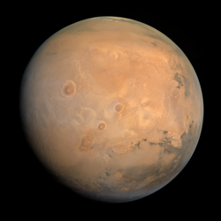

(點擊圖片開啟 NASA 3D 互動模型)
🧱 基本概覽
| 類型 | 類地行星 (岩石行星) |
|---|---|
| 平均直徑 | 約 6,779 km (約地球的一半) |
| 軌道距離 | 約 1.52 AU |
| 自轉週期 | 約 24.6 小時 (與地球相似) |
| 公轉週期 | 約 687 地球日 |
| 衛星數量 | 2 個 (火衛一、火衛二) |
| 表面特徵 | 氧化鐵覆蓋的紅色荒漠、極地冰冠 |
🔍 關於 火星 (Mars)
火星是太陽系中與地球環境最相似的行星。它的表面呈現紅色，是因為土壤中含有大量的氧化鐵（鐵鏽）。
火星擁有太陽系最高的山脈——奧林帕斯山，以及壯闊的水手號峽谷。在地科研究中，火星曾存在液態水的證據一直是科學家探討「地外生命」的重要線索。